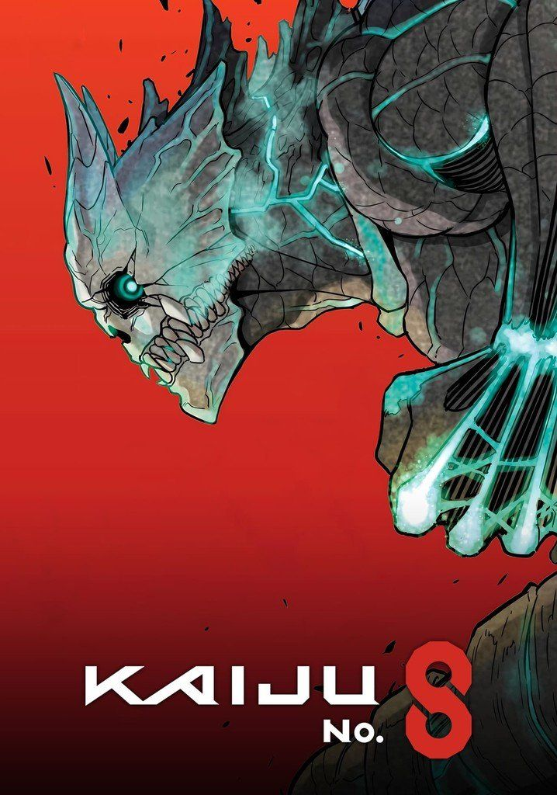
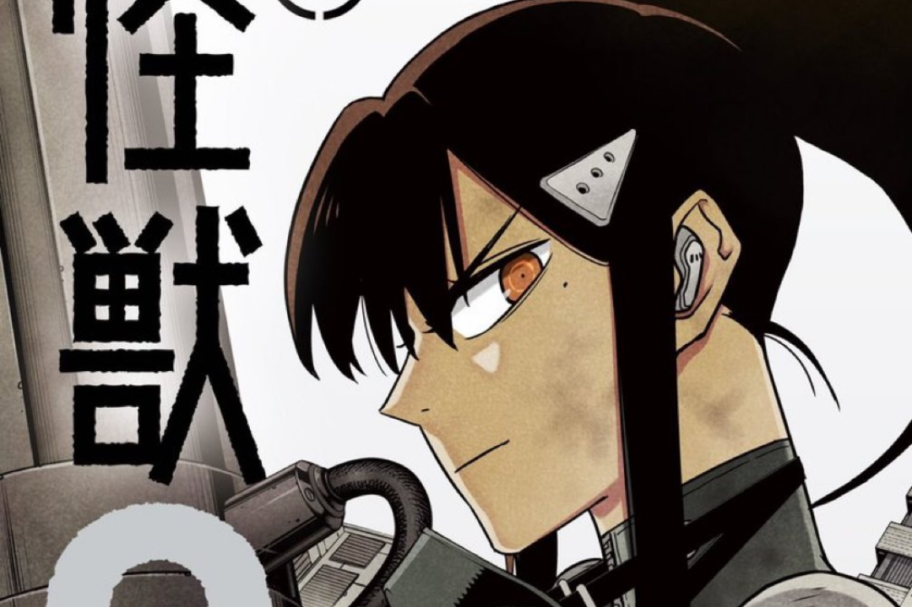
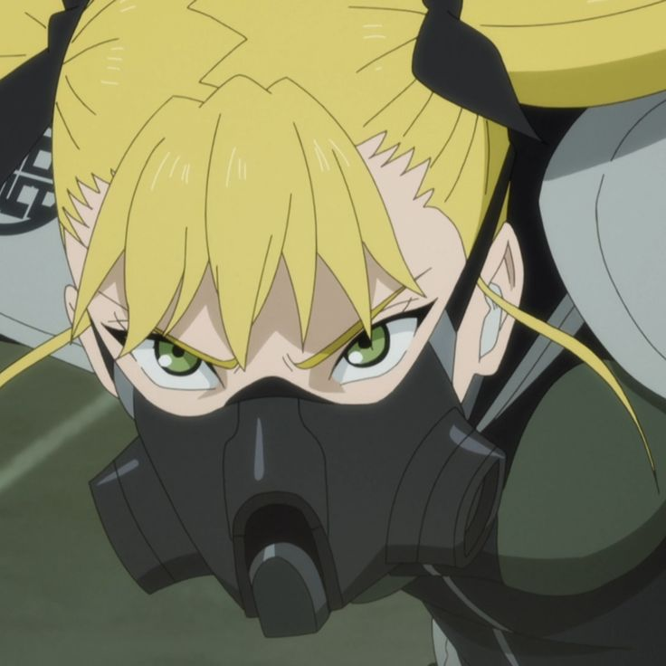
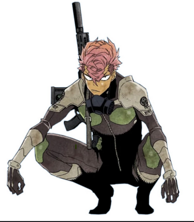

accueil
Kaiju nᵒ 8 est un shōnen manga écrit et dessiné par Naoya Matsumoto
Kaiju nᵒ 8 est un shōnen manga écrit et dessiné par Naoya Matsumoto

Kaiju No. 8 suit Kafka Hibino, un employé d'entretien qui rêve de rejoindre les Forces de Défense.

Le héros devenu Kaiju n°8.

Capitaine des Forces de Défense.

Maître du sabre anti-kaiju.

Partenaire loyal de Kafka.

Prodige de la nouvelle génération.

Iharu est un soldat de la troisième division des Forces de Défense.

Kaiju n°10 enfin révélé dans le dernier chapitre !

La capitaine dévoile une nouvelle arme anti-kaiju.

Crunchyroll confirme une saison 2 plus sombre.

Découvrez les archives secrètes de la Defense Force.

Zoom sur les kaijus les plus puissants jamais recensés.